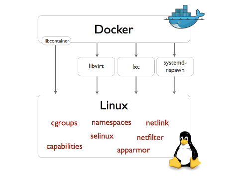
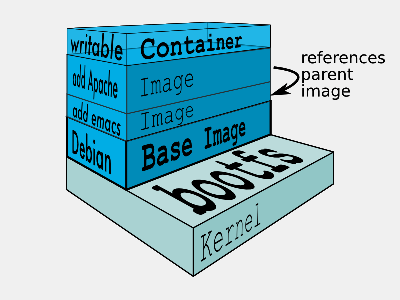
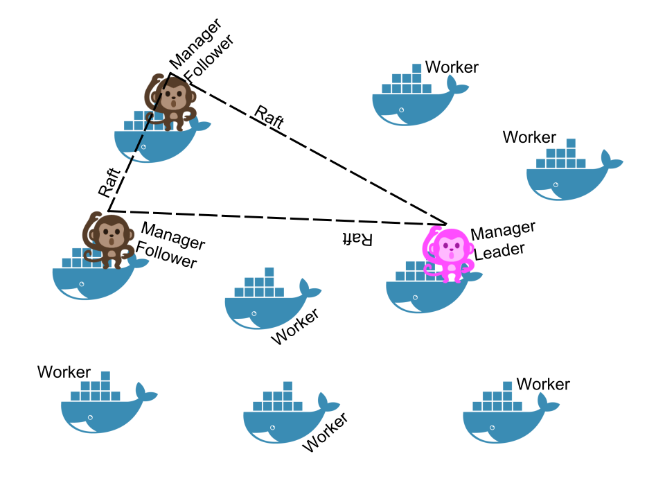

certified trainer
🐳
- I'm a developer, devops, craftsman — I 💓 & work @Docker
- I 💓 GNU/Linux 🐧, Docker 🐳 & GNU/Emacs 🐪
- I 💓 Free-software !
- I 💓 Go, Java, Python and much more
- And I 💓 unicode, 🚴 & 🚶
Wat ? Why ?
an inherent intelligence or even implicitly autonomic control
[…]
the effect of automation or systems deploying elements of control theory.
Orchestration happens on cluster(s)
a set of loosely or tightly connected computers that work together so that, in many respects, they can be viewed as a single system.
Cluster
Orchestration
« Pour le meilleur et pour le pire » 💍
o_O
If you live in a cave 👼
Docker is an open platform for developers and sysadmins to build, ship, and run distributed applications.
– docker.com
Docker is an open-source project that automates deployment of applications inside softwark containers.
– wikipedia.org
Goods transportation with container
Standing on the shoulders of giants


Quick note : Repeat after me Containers ARE NOT VMs !

# Run an image… $ docker run -ti --rm ubuntu:14.04 /bin/bash # … or something more useful $ docker run -d -p 8080:8080 -p 80:8000 \ -v $PWD/traefik.toml:/traefik.toml \ emilevauge/traefik # … or totaly crazy $ docker run -d -v /tmp/.X11-unix:/tmp/.X11 \ -e DISPLAY=unix$DISPLAY \ # … --name spotify vdemeester/spotify # What is running ? $ docker ps
Démo 🙆
An horror story of naming 🐒
A large number of insects, especially when in motion or (for bees) migrating to a new colony.
Swarm is the name of (almost) 2 projects @Docker:
docker/swarm, i.e. Swarm v1
docker/swarmkit project
These projects could have been named: pod, gam, herd (group of whale 🐳), but it's another story 👼
Docker Swarm provides native clustering capabilities to turn a group of Docker engines into a single, virtual Docker Engine.
– docker.com
Feedback aquired help understand limits and build better.
docker/swarmkit (1/4)A toolkit for orchestrating distributed systems at any scale. It includes primitives for node discovery, raft-based consensus, task scheduling and more.
– github.com/docker/swarmkit
The swarm mode is the implementation of docker/swarmkit in the
docker engine, starting from 1.12.
docker
docker/swarmkit can work without docker (with different runtimes)
docker/swarmkit (2/4)docker/swarmkit (3/4)
one of them is elected as the leader
docker/swarmkit (4/4)docker-compose.yml)
Let's play 🎮

Thank You 🐸
The demo, at home 🏡
When we do docker swarm init:
There is one token to join as a worker, and another to join as a manager.
The join tokens have two parts:
If a token is compromised, it can be rotated instantly with:
docker swarm join-token --rotate <worker|manager>
When a node joins the Swarm:
(Except if your instances have different private and public addresses, e.g. on EC2, and you are building a Swarm involving nodes inside and outside the private network: then you should advertise the public address.)
docker service create alpine ping 8.8.8.8
docker service ps <serviceID>
docker-machine ssh nodeX docker logs <containerID> # experimental docker service logs <serviceID>
Services can be exposed, with two special properties:
docker service create --name hello --publish 80 emilevauge/whoami
Services can be updated using `service update` command (or shortcuts like `service scale`)
docker service update --replicas=10 hello # Same as docker service scale hello=10
docker network create --driver overlay demo-net docker network ls docker-machine ssh worker1 docker network ls
docker service create --network demo-net --name whoami emilevauge/whoami
docker service create --network demo-net --name curlito nathanleclaire/curl sh -c \
"while true; do curl http://whoami/; sleep 2; done"
docker network create insecure --driver overlay --attachable docker network create secure --opt encrypted --driver overlay --attachable
docker service create --name whoami --network secure \
--network insecure --constraint node.hostname==node2 emilevauge/whoami
docker-machine ssh node2 docker run \
--net host jpetazzo/netshoot ngrep -tpd eth0 HTTP
docker run --rm --net insecure nicolaka/netshoot curl whoami # should display an HTTP frame docker run --rm --net secure nicolaka/netshoot curl web # should only display #
docker service create --name registry --publish 5000:5000 registry:2
docker-machine ssh manager1 curl localhost:5000/v2/_catalog docker-machine ssh manager1 curl localhost:5000/v2/_catalog # […]
docker pull busybox docker tag busybox localhost:5000/busybox docker push localhost:5000/busybox
docker service create --secret source=foo.N,target=foo ...
docker service update ... --secret-rm foo.M --secret-add source=foo.N,target=foo
docker-compose to test develop and run our application
DOCKER_REGISTRY=localhost:5000
TAG=v0.1
for SERVICE in hasher rng webui worker; do
docker-compose build $SERVICE
docker tag dockercoins_$SERVICE $DOCKER_REGISTRY/dockercoins_$SERVICE:$TAG
docker push $DOCKER_REGISTRY/dockercoins_$SERVICE
done
docker network create --driver overlay dockercoins
DOCKER_REGISTRY=localhost:5000
TAG=v0.1
for SERVICE in hasher rng webui worker; do
docker service create --network dockercoins --name $SERVICE \
$DOCKER_REGISTRY/dockercoins_$SERVICE:$TAG
done
docker service update webui --publish-add 8000:80
docker service update --replicas 10 worker
service update. But first, let's update/define an upgrade
policy.
# Update task 2 by 2, separate by 5s docker service update --update-paralellism 2 --update-delay 5s worker # update docker service update --image $DOCKER_REGISTRY/dockercoins_worker:v0.2
If something wrong happens, you can rollback
docker service update --image $DOCKER_REGISTRY/dockercoins_worker:v0.1 # Using docker >= 1.13 docker service update --rollback
Building and pushing stack services
docker-compose -f my_stack_file.yml build docker-compose -f my_stack_file.yml push docker stack deploy my_stack --compose-file my_stack_file.yml
# Do some changes, update the compose file docker-compose -f my_stack_file.yml build docker-compose -f my_stack_file push docker stack deploy my_stack --compose-file my_stack_file.yml